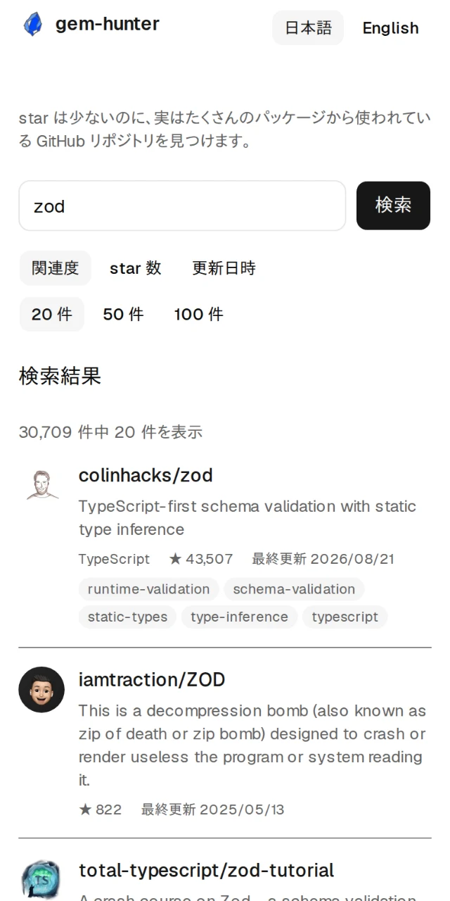
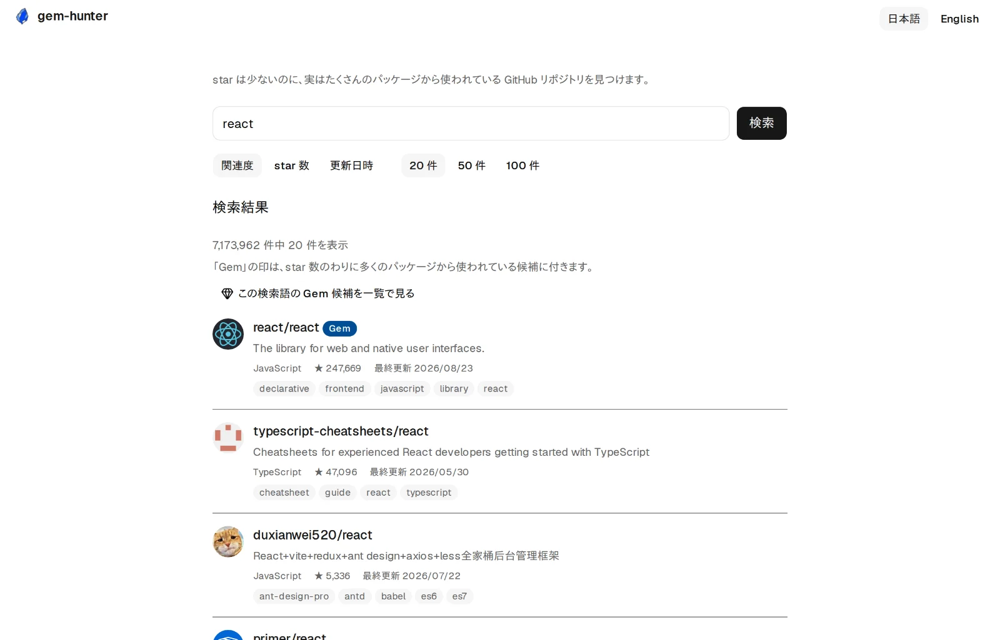
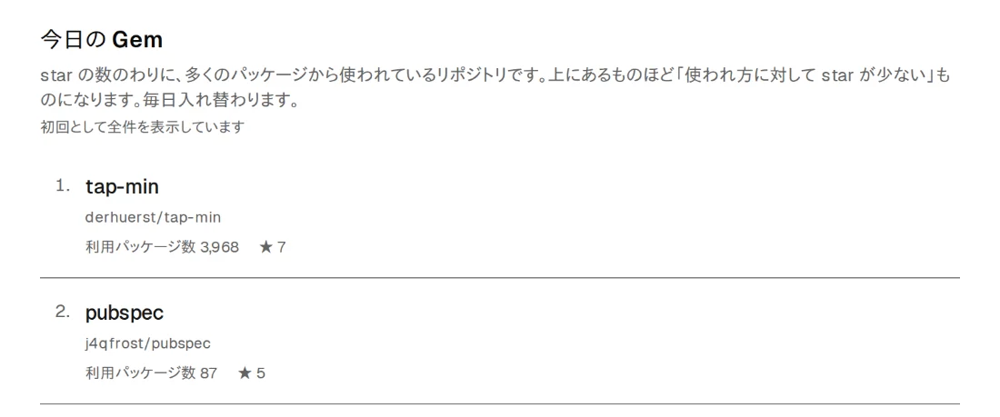

被依存数から探す GitHub 検索
star では埋もれる、
実際に使われている OSS を見つける。
gem-hunter は、GitHub のキーワード検索に加えて、被依存数 のわりに star が少ない OSS を毎日 5 件提示する検索ツールです。被依存数とは、 そのリポジトリを実際に依存関係へ入れているパッケージの数のこと。 スマートフォンのブラウザで開くだけ、アプリのインストールも登録も要りません。
- 登録不要
- 無料
- 広告・トラッキングなし
- MIT ライセンス

スマートフォンで表示した実際の画面です（検索結果は GitHub API から取得しています）。
キーワードの例（クリックでそのまま検索）
画面幅
PC でも、そのまま使えます。
同じ URL を PC のブラウザで開くと、縦に積み重なっていた要素が横に並び替わります。 スマートフォン用と PC 用でアプリを使い分ける必要はありません。

PC の画面幅で「react」を検索したところです（検索結果は GitHub API から取得しています）。
課題
star は「注目度」であって、「使われている証拠」ではない。
star は誰でも 1 クリックで押せます。だから star 順に並べるほど、 地味だけど本当に使われているライブラリは下に沈んでいきます。
star の多い順に見ると
すでに有名なリポジトリが上位を占めます。人気の指標としては正しくても、 「自分の実装に使えるか」の判断材料にはなりません。
被依存数から見ると
「実際に import されている数」は水増ししにくい指標です。star が少ないのに 多くのパッケージから使われているものが、見つけたかった OSS です。
debug_inspector の star 数
111,000+
そのリポジトリに依存する OSS の数
出典: He et al.
Six Million (Suspected) Fake Stars on GitHub（ICSE 2026）ほかの調査まとめ。実例に挙げた debug_inspector は RubyGems の
パッケージで、25 star に対し 111,000 以上の OSS プロジェクトから依存されています。
仕組み
やることは 3 つだけ。
アカウントも設定もいりません。開いて、打って、読むだけです。
-
キーワードで GitHub を検索する
関連度 / star 数 / 更新日時で並び替え、20・50・100 件から表示件数を選べます。 検索条件は URL に載るので、そのまま共有・ブックマークできます。
-
キーワードなしで開いて「今日の Gem」を見る
キーワードを入れずに開くと、被依存数のわりに star が少ないリポジトリを 毎日 5 件だけ提示します。前回の訪問になかったものには「新着」が付きます （初回は「初回として全件を表示しています」と出て、個別の新着マークは 2 回目の訪問から付きます）。
-
詳細画面で README まで読む
star / watcher / fork / open issue の 4 指標と README 本文をその場で表示します。 読み終わって戻れば、検索条件はそのまま残っています。
「今日の Gem」の並び順
Gem Index = 被依存数の順位 − star の順位
どちらも Ecosyste.ms の 0〜100 のパーセンタイル順位（0 が最上位）です。値が小さいほど 「使われ方に対して star が少ない」＝ 過小評価されている、という意味になります。 例えば被依存数が上位 0.1（＝ 上位 0.1%）で star が上位 7（＝ 上位 7%）なら Gem Index は −6.9。実際のデータでもこのあたりが最上位帯です。
この値が小さい上位 60 件を母集団に、日付から決まる順序で毎日 5 件を選び、 その 5 件をこの値の順に並べています。同じ日なら、誰が見ても同じ 5 件です。
健全性スコア（OpenSSF criticality_score など）は この値に足し込みません。足すと「健全だが有名」なリポジトリが 上位に戻ってきて、結局 star 順のランキングに退化するからです。 判断の経緯は ADR 0009 に残してあります。
できること
いま動いている機能。
これから作るものではなく、いま開いて触れるものだけを載せています。
今日の Gem
被依存数のわりに star が少ないリポジトリを、毎日 5 件だけ入れ替えて提示します。 「利用パッケージ数」と star 数を並べて出すので、そのギャップがひと目でわかります。
ある日の 1 位:
rollup-plugin-peer-deps-external
— 利用パッケージ数 26,633 に対して star は 111
（2026-08-21 時点の一例。顔ぶれは毎日入れ替わります）

スマートフォンで取りこぼさない
主要導線のタップ領域は 44px、入力欄は 16px 以上で iOS の自動ズームも起きません。 画面幅が変わっても、同じ機能がそのまま縦に積み替わるだけです。
詳細画面と README
star / watcher / fork / open issue と README 本文を同じ画面で読めます。 独立した URL なので、共有もブラウザバックも素直に動きます。
キーボードだけで完走できる
検索から詳細閲覧までマウスなしで到達できます。Lighthouse の Accessibility 100 を「下回ったらリリースしない」基準として運用しています。
日本語 / English
画面右上でいつでも切り替えられます。切り替えはリンク遷移なので、 JavaScript を切っていても動きます。
渡すものが何もない
アカウント登録は要りません。広告も、アクセス解析のトラッキングも入れていません。 検索したキーワードをサーバーに保存する仕組みも持っていません （データベースを 1 つも接続していないので、保存しようがない、が正確です）。
つくり
中身を全部見せています。
使ってもらう相手が開発者なので、「何を根拠に並べているか」「どう作ったか」を 隠さないことを信頼の代わりにしています。
先に言っておく制約
- 出てくる 5 件は毎日入れ替わります。ただし元になる被依存データは定期的に取り直した スナップショットなので、GitHub の最新値や詳細画面の表示とは差が出ることがあります （画面に生成時刻を出しています）。
- 共有の API レート枠で動いています。混み合う時間帯は検索が一時的に失敗することが あります。少し時間をおいてから試してください。
- Gem Index は「今日の Gem」の並び順にだけ使っています。 キーワード検索の結果は GitHub の検索結果をそのまま並べています。
FAQ
よくある質問
GitHub の検索と何が違いますか？
stars: のような条件では書けない
「使われ方に対して star が少ない」という観点を足しています。
「被依存数」とは何ですか？
対応しているエコシステムは何ですか？
アカウント登録は必要ですか？
データはどのくらい新しいですか？
なぜ無料なのですか？いつまで使えますか？
広告やトラッキングはありますか？
自分の環境で動かせますか？
npm ci → npm run dev で起動できます。
環境変数はすべて任意で、1 つも設定しなくても検索と詳細表示は動きます。
探しているのは、たぶん star の下にあります。
キーワードを 1 つ入れるところから。登録も設定もありません。
- 登録不要
- 無料
- 広告・トラッキングなし
- MIT ライセンス